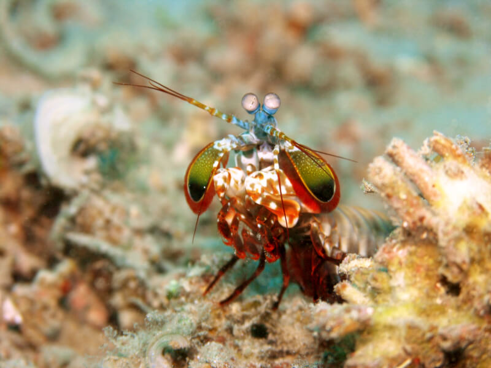
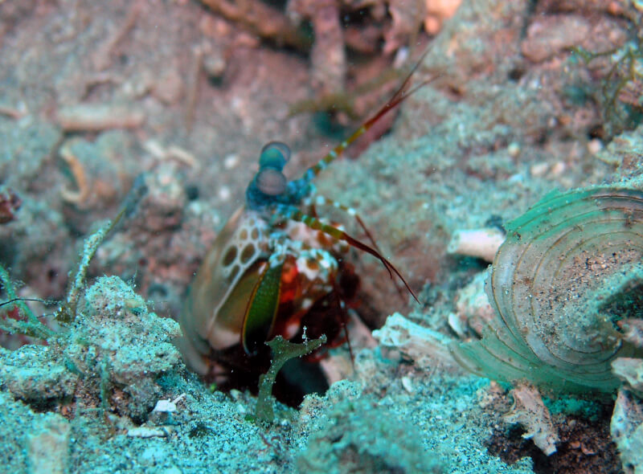
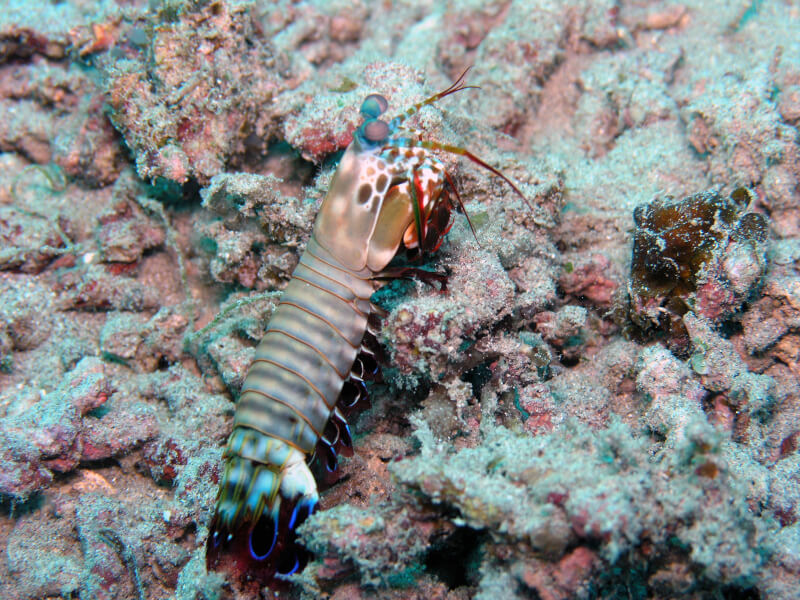

Fatos sobre o Stomatopoda
Bichinho simpático
| Reino: | Animalia |
| Filo: | Arthropoda |
| Classe: | Malacostraca |
| Subclasse: | Hoplocarida |
| Ordem: | Stomatopoda |
Também conhecidos popularmente no Brasil como tamarucatas ou lacraias-do-mar, os stomatopodas (ou estomatópodes) são uma ordem de crustáceos marinhos que habitam águas tropicais e subtropicais. Nome científico: Odontodactylus scyllarus
Os olhos mais impressionantes
Os stomatopodas possuem um sistema de visão extremamente complexo capaz de reconhecer 12 cores primárias. Para efeitos de comparação, o ser humano possui apenas três receptores diferentes de cores (vermelho, verde e azul) que combinadas correspondem a todo o espectro de luz visível para nós.
Em constaste, os stomatopodas possuem 12 sensores sensíveis a cores e outros quatro que filtram a luz, totalizando 16. Isso significa que eles conseguem enxergar cores que nós não conseguimos nem imaginar e em uma quantidade que nosso cérebro sequer é capaz de processar.
Socão marinho
Apesar da aparência colorida, os stomatopodas são predadores implacáveis extremamente violentos. Eles possuem dois apêndices ("patas") raptoriais na frente de seus corpos que se aceleram na mesma velocidade de uma bala de uma arma de calibre 22. Em menos de três milésimos de segundo elas podem dar um soco com 1500 Newtons de força.
Armadura natural
Seus membros se movem tão rápido que fazem com que a água em torno deles ferva. E são tão resistentes que pesquisadores estão estudando suas estruturas celulares para usar no desenvolvimento de armaduras corporais para tropas de combate.